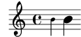
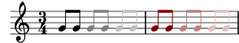
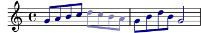

2.6.1 Évaluation d’un contexte
Un contexte peut être modifié, au moment même de son interprétation, par du code Scheme. La syntaxe consacrée au sein d’un bloc LilyPond est
\applyContext fonction
et, dans le cadre d’un code Scheme :
(make-apply-context fonction)
fonction est constitué d’une fonction Scheme comportant un
unique argument : le contexte au sein duquel la commande
\applyContext est appelée. Cette fonction peut accéder aussi bien
aux propriétés de grob (y compris modifiées par \override
ou \set) qu’aux propriétés de contexte. Toute action entreprise
par la fonction et qui dépendrait de l’état du contexte sera limitée à
l’état de ce contexte au moment de l’appel à la fonction. Par
ailleurs, les adaptations résultant d’un appel à \applyContext
seront effectives jusqu’à ce qu’elles soient à nouveau directement
modifiées ou bien annulées, quand bien même les conditions initiales
dont elles dépendent auraient changé.
Voici quelques fonctions Scheme utiles avec \applyContext :
ly:context-propertyrecherche la valeur d’une propriété de contexte,
ly:context-set-property!détermine une propriété de contexte,
ly:context-grob-definitionly:assoc-getrecherche la valeur d’une propriété de grob,
ly:context-pushpop-propertyréalise un
\temporary \overrideou un\revertsur une propriété de grob.
L’exemple suivant recherche la valeur en cours de fontSize puis
la double :
doubleFontSize = \applyContext #(lambda (context) (let ((fontSize (ly:context-property context 'fontSize))) (ly:context-set-property! context 'fontSize (+ fontSize 6)))) { \set fontSize = -3 b'4 \doubleFontSize b' }
L’exemple suivant recherche la couleur des objets NoteHead,
Stem et Beam, puis diminue pour chacun d’eux le degré de
saturation.
desaturate = \applyContext #(lambda (context) (define (desaturate-grob grob) (let* ((grob-def (ly:context-grob-definition context grob)) (color (ly:assoc-get 'color grob-def black)) (new-color (map (lambda (x) (min 1 (/ (1+ x) 2))) color))) (ly:context-pushpop-property context grob 'color new-color))) (for-each desaturate-grob '(NoteHead Stem Beam))) \relative { \time 3/4 g'8[ g] \desaturate g[ g] \desaturate g[ g] \override NoteHead.color = #darkred \override Stem.color = #darkred \override Beam.color = #darkred g[ g] \desaturate g[ g] \desaturate g[ g] }
Ceci pourrait tout à fait s’implémenter sous la forme d’une fonction
musicale, afin d’en réduire les effets à un seul bloc de musique. Notez
comment ly:context-pushpop-property est utilisé à la fois pour un
\temporary \override et pour un \revert :
desaturate = #(define-music-function (music) (ly:music?) #{ \applyContext #(lambda (context) (define (desaturate-grob grob) (let* ((grob-def (ly:context-grob-definition context grob)) (color (ly:assoc-get 'color grob-def black)) (new-color (map (lambda (x) (min 1 (/ (1+ x) 2))) color))) (ly:context-pushpop-property context grob 'color new-color))) (for-each desaturate-grob '(NoteHead Stem Beam))) #music \applyContext #(lambda (context) (define (revert-color grob) (ly:context-pushpop-property context grob 'color)) (for-each revert-color '(NoteHead Stem Beam))) #}) \relative { \override NoteHead.color = #darkblue \override Stem.color = #darkblue \override Beam.color = #darkblue g'8 a b c \desaturate { d c b a } g b d b g2 }